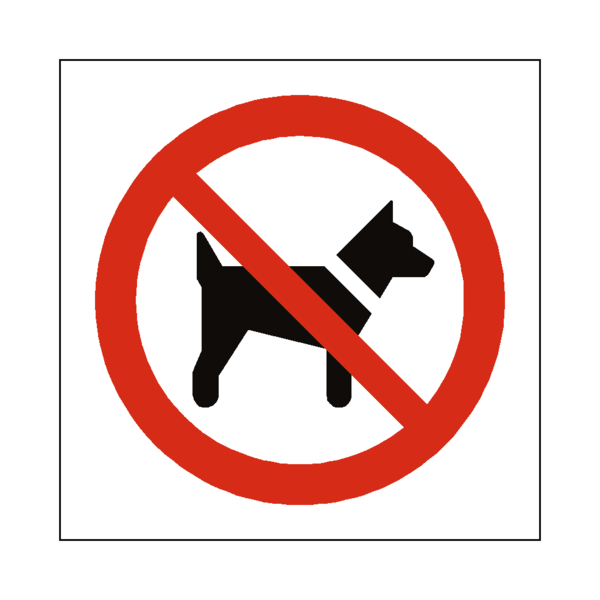

Junior Courses Briefing
Hello, and Welcome to Queen Mary Junior courses. We are delighted that you will be joining us for a course at Queen Mary Sailing Club. Please read carefully the information relating to the type of course your child is attending.

Important information for JUNIOR COURSES
- Leave Dogs at home – It is a Thames Water stipulation sadly that no dogs are permitted anywhere on the grounds of the Sailing Club.
- Be Prepared - On day 1 you will need to stay with your child until they are changed and ready to start; they will be able to use our changing rooms. (This is the first thing they will do).
- Arrival time – please note the start and end time for your course and aim to arrive no more than 10-15 minutes before the start of your session and please be here in time to collect at the end of the session – we will have your child ready for collection at the stated finish time.
- Our Front Gates are electronically controlled. Please press the CALL button to gain access, drive through and then park in the lower car park to the right. An access code will be given to you on sign-in/out by your child's instructor, which can be used on the way in and out during the remainder of the course (black keypad labelled SAILING CLUB). If you are arriving by any means other than car, please make your way up the ramp to the upper level.
We ask that all children arrive accompanied by a parent / guardian. Our policy on child safeguarding can be found on the Club Documents page.
If you are sharing lifts or have made a booking on behalf of a group, please do forward this information to the parents/guardians of the other participants - we have no means of doing so for you and it's important all parents/guardians have this information.
Prior to the course starting, please make sure the parent/guardian of each participant fills in the medical form (this is mandatory prior to any courses taking place). We will need to know the course start date, as well as their full name and date of birth of the course participant. Please click on the link and fill in the details - Medical form Link. A QR code will also be available to scan and can be found around the club house.
There may be a club photographer taking photos for club promotion over the holidays, please let us know if you would not like your children to be in photos on the Medical Form.
Meals and beverages are available to purchase on site either from the Junior Lunch Menu (this will be received as an email attachment to the course briefing sent a few days before the course start) order and pay the caterers (in the café). You can order from the Café Menu at the beginning of the day, so the meal is ready for your child when they come off the water at lunchtime. Packed lunches can also be brought in if you do not require catered food and beverages.
STEP BY STEP
Before leaving home:
- Leave Dogs at home – It is a Thames Water stipulation that no dogs are permitted anywhere on the grounds of the Sailing Club.
On Arrival:
- Arrival time – please note the start and end time for your course and aim to arrive no more than 15-30 minutes before the start of your session and be here in time to collect at the end of the session – we will have your child ready for collection at the stated finish time.
- Our Front Gates are electronically controlled. Please press the CALL button to gain access, drive through when they open (on the green light) and then park in the lower car park to the right. An access code will be on signs around the club house which can be used on the way in and out during the remainder of the course (black keypad labelled SAILING CLUB). If you are a pedestrian, please use the vehicle entrance to access through the gates.
- We ask that all children arrive, and leave accompanied by a parent/guardian. Our policy on child safeguarding can be found on the Club Documents page.
- Once you have parked, please come up the steps where a member of staff will meet you. They will direct you to a meeting zone, where you should sign your child in at beginning of each session on every day they attend.
Signing in:
- Parents should stay with children until they have signed in with their instructor. Please do not leave the site until this has happened.
- Please hand to your instructor:
- any valuables, such as phones or wallets – please note the changing rooms are not secure storage for valuable items. If you need to get a message to your child, please phone the club office on 01784 248881, as we have a duty of care whilst your child is on site and will pass on messages as appropriate.
- Any medication (eg asthma pumps, epipens, etc), clearly named and with instructions on the medical form, to be handed to the office (you will collect it from here too). Please notify us on the medical form, if the medication needs to be held in the office or on a safety boat whilst your child is on the water. Please make sure medication is not left in your child's bag – if it is needed in a hurry, we will not be able to find it!
Once your child is signed in, please feel free to leave or to stay on site. You are welcome to sit outside on the terrace or come into the clubhouse – there is good Wi-Fi and a café, so you can work from here.
Signing out:
- You will have been given the code for the week, so you can get in and out (black keypad labelled SAILING CLUB). At the end of your child's session, you must sign them out from the sign out station at the front of the clubhouse. Please don't leave without doing so; also let anyone else who's sharing lifts know this is the case. We will contact you in the circumstances that your child has not been signed in or out.
- If you are sharing lifts, please send an email sailondon@queenmary.org.uk to let us know this; otherwise, we will be expecting parents/guardians collect their own child.
No child may leave site without a parent/guardian or written permission from parents (pick up only – email sailondon@queenmary.org.uk to let us know).
FULL DAY COURSES (running from 0930 to 1630 each day)
- Full day course participants will get changed within session times and children will be ready for parents to sign them out at the end of their session.
SNACKS, DRINKS AND LUNCH
- Please come with plenty of drinks and snacks. We have water bottle refill stations in the clubhouse and will encourage children to stay well-hydrated during the day.
WEATHER
- Too much or too little wind is not normally a reason to cancel. In adverse weather, the instructors will run shore-based learning and teambuilding games with the group.
STUDENT BEHAVIOUR
- This is taken seriously with a zero tolerance to bullying. All users of QM are expected to show respect and understanding for each other. Our Code of Conduct document can be found on the Queen Mary Sailing Club website under Club Documents.
WHAT TO BRING
It is good to check the weather conditions before leaving. Students will be outside for most of the day, so ensure they come equipped to be comfortable in the weather conditions.
What to bring on the Day:
- Bag for your kit
- Swimwear to wear under a wetsuit
- A spare change of clothes – in the event of extremely hot weather we may decide not to use wetsuits and ask the students to wear t shirt, shorts etc instead.
- Closed toe shoes such as trainers or wetsuit shoes – NO FlipFlops, Sliders or Crocs please; these are dangerous on our banks and not safe when sailing or windsurfing.
- Towel
- Basic wind/waterproof jacket that you don't mind getting wet
- Warm layers, hat (recommended), gloves
- Sunscreen and sunhat
- Water Bottle
- Logbook (if you have one)
What NOT to bring:
- Dogs onto the site
- Anything valuable that you don't need for your course
We provide:
- Wetsuits
- Buoyancy aids
- Helmets
- Harnesses
- We have a limited supply of wetsuit shoes in the event of loss of shoes on the day. Please do not rely on this supply as we cannot provide footwear for everyone.
THAT'S ALL FOLKS
Thank you for reading, we're excited to see you for your course!
Team QM